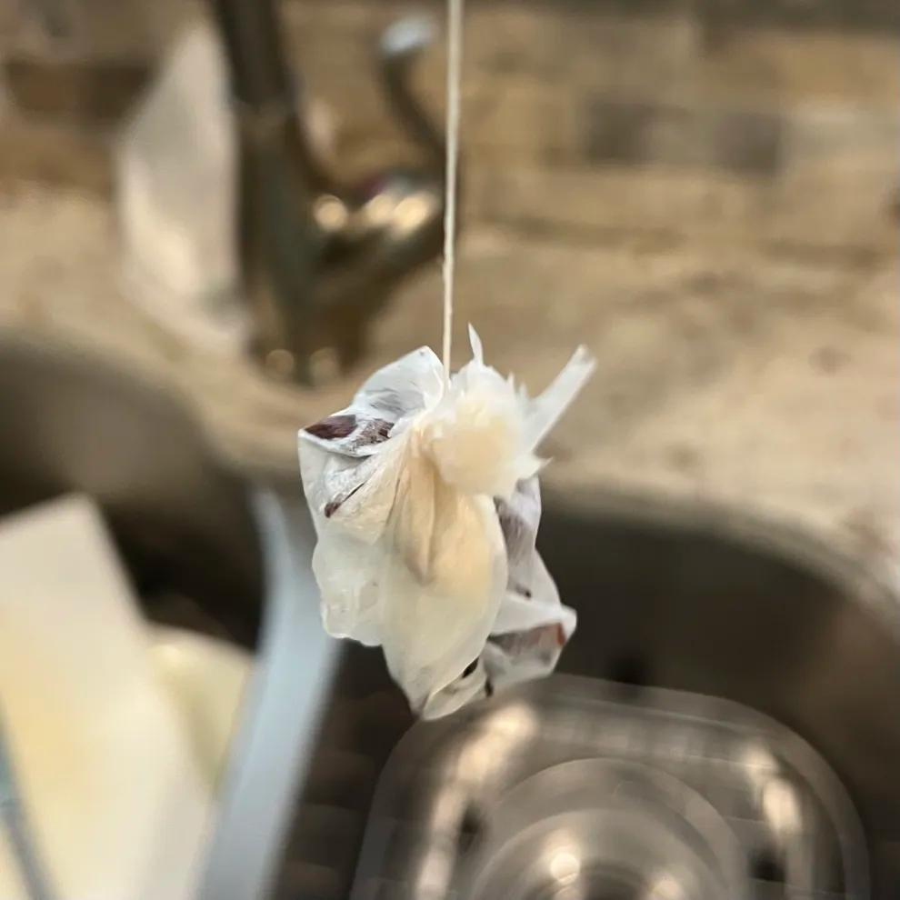
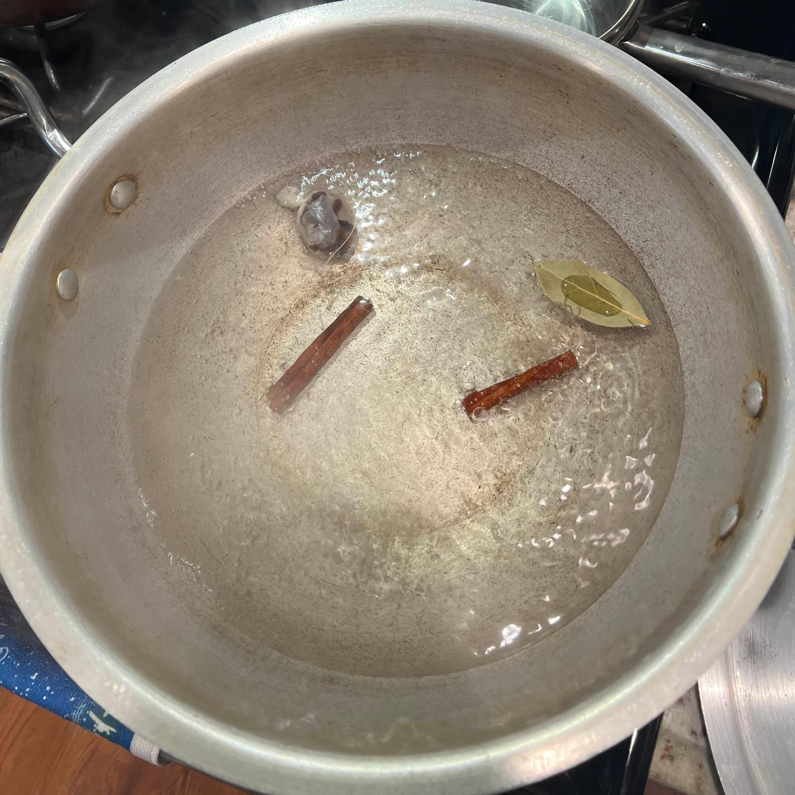
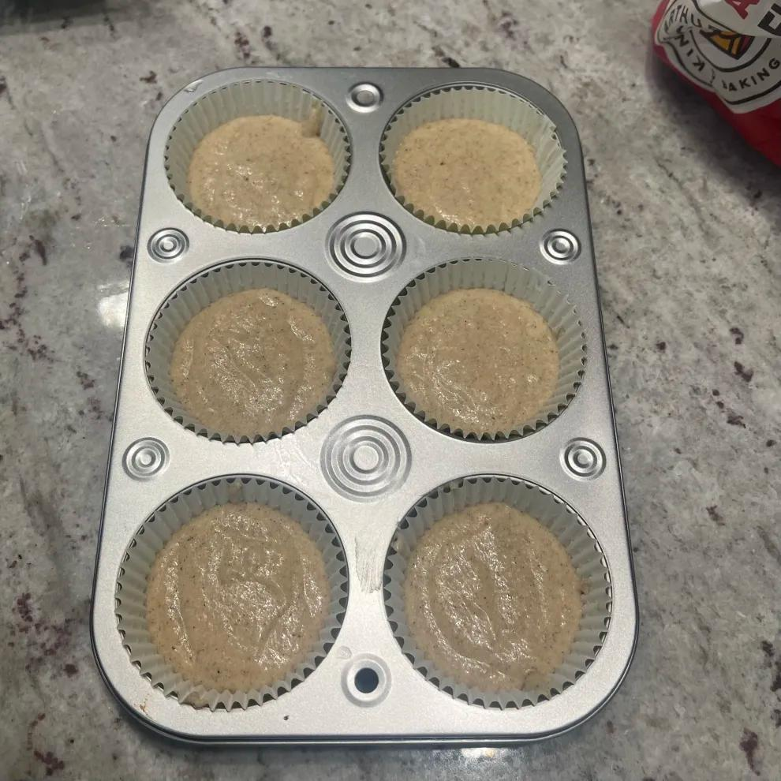
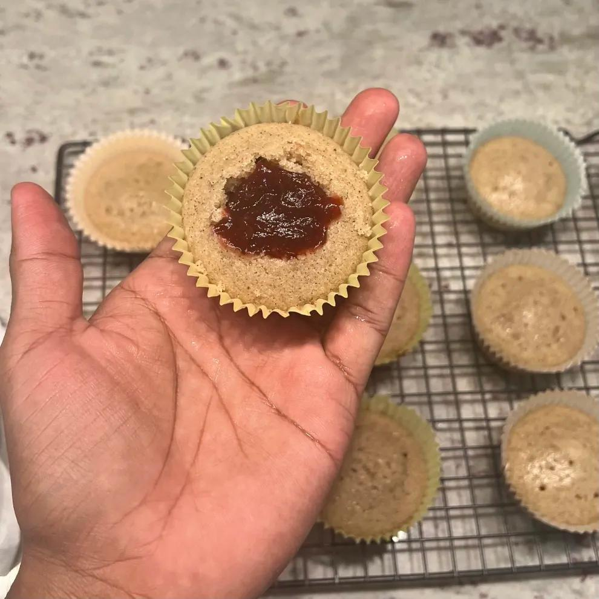

Dried sorrel substitute: use 3.5 oz (100g) dried sorrel, rinsed, and steep in the pot after boiling for at least 2 hours
Sorrel Jam
Sponge Cupcakes
Homemade: add 1&1/4 tsp lemon juice to a measuring cup, fill to the 1/2 cup line with room-temp milk, stir, and let sit 10 minutes; See detailed steps
Spiced Rum Whipped Cream
Directions
Prep
Take out eggs, butter, buttermilk 2 hours beforehand to bring to room temp.
Wash sifter, blender/food processor, large pot, muffin tin, and mixer.
Make the Sorrel Juice
Wash and deseed sorrel.
Add cloves and star anise to a cheesecloth/empty tea bag and tie it tightly.
>View image

Add water to a pot with spices. Bring to a boil.
>View image

Add sorrel. Bring back to a boil.
>View image
After 5 minutes, reduce to a simmer for 15 minutes.
Remove from heat and place pot cover on. Allow to steep until room temperature.
You can remove the pot cover after 15 minutes and place by a window to cool faster.
Once room temperature, remove the spices and strain.
Transfer sorrel juice to a container. DO NOT THROW AWAY THE SORREL PULP.
Make the Sorrel Jam
In a blender, pulse the sorrel pulp, adding sorrel juice as needed to get a smooth consistency.
>View image
Add blended sorrel pulp to the same pot used to boil it.
Add salt, sugar, and orange peel.
Cook on medium low flame for 20-25 minutes or until thickened to a jam consistency.
>View image
Taste for sweetness and add more sugar if desired.
Remove from heat and cool until room temperature.
Move to a container to store jam.
Baking the Sponge Cupcakes
Adjust oven rack to middle position and preheat oven to 325F (162C). Line muffin tin with cupcakes liners.
In a medium bowl, sift the flour and corn starch.
Add the baking powder, salt, and spices. Whisk together and set aside.
In a large mixing bowl, using a mixer at MEDIUM speed, beat butter and sugar together until light and fluffy. About 4 minutes.
>View image
Add ONE egg at a time and beat each until just combined. Scrape down the sides after each addition.
Add vanilla, beat to combine.
With the mixer on LOW, beat 1/3 of the dry ingredients into the egg mixture.
Beat 1/2 of the buttermilk into the bowl.
Repeat, ending with the flour mixture. Scrape down the sides and mix for 15 more seconds.
>View image
Fill each of the cupcake liners 2/3 of the way full.
>View image

Bake 15-20 minutes, or until a toothpick inserted in the center comes out clean.
Allow cupcakes to cool in the tins for 5 minutes, then transfer to a wire rack.
Allow to cool until ROOM TEMPERATURE.
Make the whipped cream and assemble
Once the jam and cupcakes are cooled, make a circular hole in the center of the cupcake with a small spoon or knife.
Using a small spoon, fill hole with about one tablespoon of sorrel jam.
>View image

In a large bowl, using a mixer with whisk attachment, whip the heavy cream, sugar, orange zest, rum (if using) and cream of tartar (if using) on medium-high speed until stiff peaks form. About 5-8 minutes.
If you accidentally over-whip the cream, and it looks curdled and heavy, pour in a little bit more cold heavy cream, and fold it in gently by hand with a spatula until it smooths out.
Pipe whipped cream or simply add a dollop on the cupcake.
Finish with nutmeg and some more orange zest on top if desired.
(Optional) Use small pieces of fresh sorrel to garnish!
Nutrition facts
I have absolutely no idea! Please feel free to hit me up if you calculate this :)
Notes
If you don't have cream of tartar and want to stabilize the whipped cream, you can use 1 tablespoon cornstarch and grind the granulated sugar to a powder. You can also use 1/2 teaspoon fresh lemon juice but you must add it AFTER the cream starts to thicken. You can also use cream cheese , but the steps are different. See here: Light and Airy Whipped Frosting
There's a lot of lenience you have when it comes to the flavor of the whipped cream. You can grind the dried sorrel to a powder and add that on top or inside. You can add the sorrel jam in it, add angostura bitters, you could use spices in it instead of putting it directly on top, or you could even make a simple syrup with Dragon Stout. I highly reccomend you mess with it to come up with something new!
By using all purpose flour and corn starch, we're creating homemade cake flour. Most people don't have cake flour stocked and why buy it when you can make it at home!
I chose 325F because it's easier to prevent cracking and avoid overbaking. It won't be golden brown but it will be very moist.